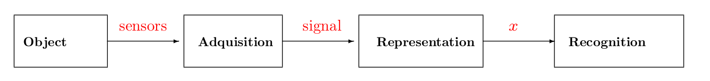
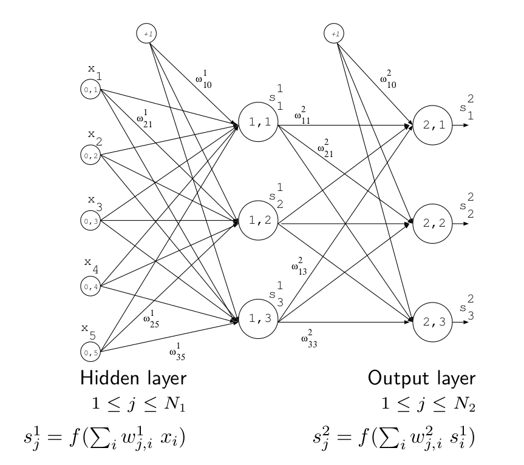
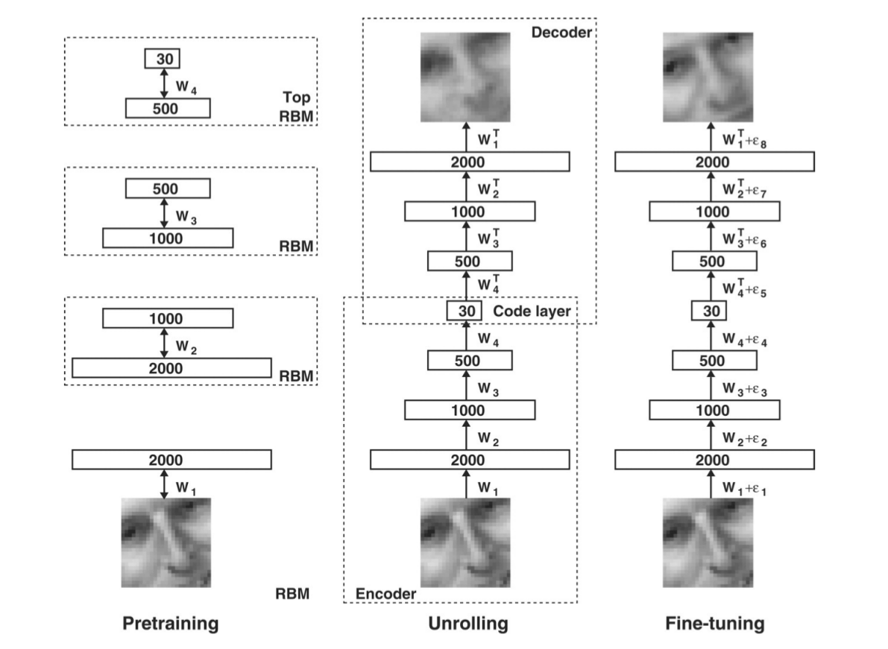
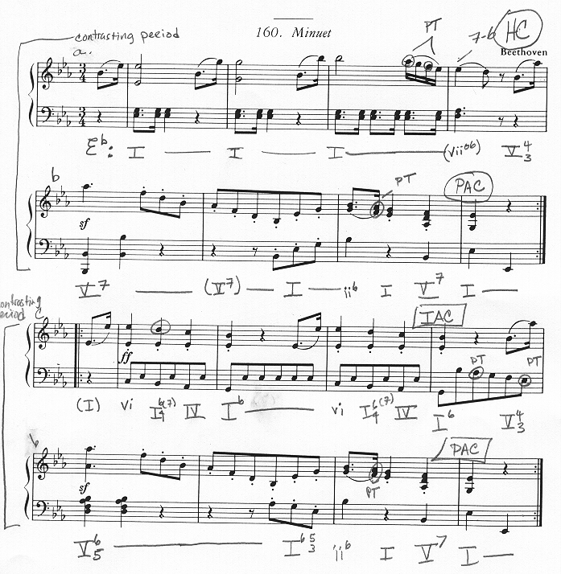
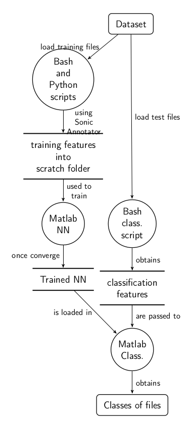
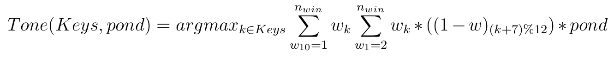
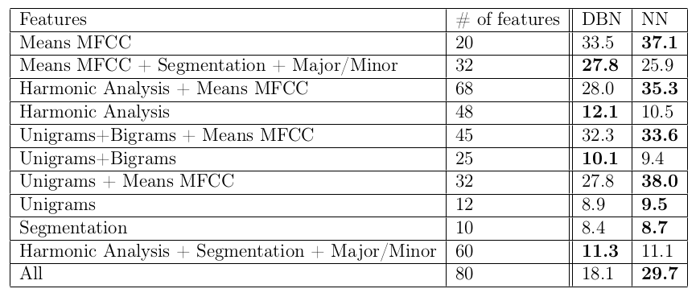

Music Information Retrieval Evaluation eXchange (MIREX)
organized by The International Music Information Retrieval Systems Evaluation Laboratory (IMIRSEL)
hold as part of the 16th International Conference on Music Information Retrieval, ISMIR 2015 (Malaga)
Audio Classification (Train/Test) Tasks
Audio Classical Composer Identification
State of the art
Previous submissions of composer identification in MIREX
Classifiers: SVN, CNN, RBM, GMM, kNN, MLP
Features: MFCC, DFB, OSC, SP, DSP, STFT, LFP, CP
Machine Learning

Neural Network

Deep Belief Network

Musical Analysis
The process and the academic discipline which studies the musical works from the pattern aspect, the internal structure, composition techniques and interpretative aspects is the musical analysis.
Structure
Melody
Texture
Harmony
Tone
Dynamics
Example of written musical analysis

Workflow diagram

Features
Key Mode
Vamp Plugin
Segmentation
Vamp Plugin
Tonality

Harmonic analysis
MFCC Means
Vamp Plugin
Classifier
Multi Layer Perceptron (MLP)
Deep Belief Network (DBN)
z-score normalization
Normalization between 0 and 1
44 neurons at hidden layer
300 epochs
Dynamic setting of batch size
Sigmoid activation function
Softmax output function
Results
Dataset
11 "classical" composers
Bach
Beethoven
Brahms
Chopin
Dvorak
Handel
Haydn
Mendelssohn
Mozart
Schubert
Vivaldi
Dataset
Homemade database
From own music library
1100 audio cuts (100 files per composer)
44 neurons at hidden layer
300 epochs
Dynamic setting of batch size
Sigmoid activation function
Softmax output function
Results

Conclusions
A different approach of a music audio classification problem from the music theory point of view using a structural analysis of the musical work
The propagated error of the feature extraction is crucial for this theory to work
El desarrollo se ha llevado de forma incremental
Conclusiones
Líneas futuras de desarrollo
Melody or bass patterns (using implementations from the state of the art of MIREX which are close to 90% of accuracy)
Improve the segmentation feature using history ("n-gram segmentation")
More accurate tonality detection to improve the harmony analysis
Or use different machine learning algorithms like Convolutional Neural Nets
Investigate the viability of profiling the composer of the classical works